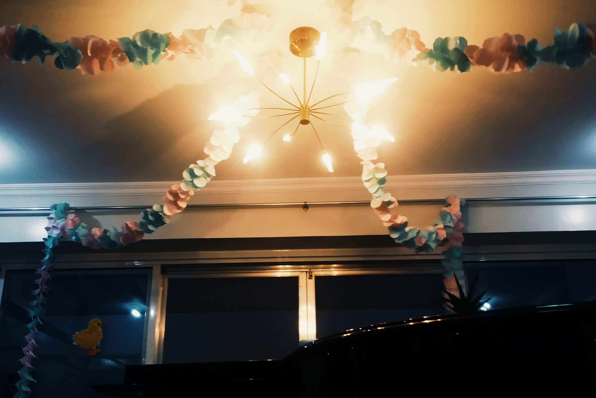
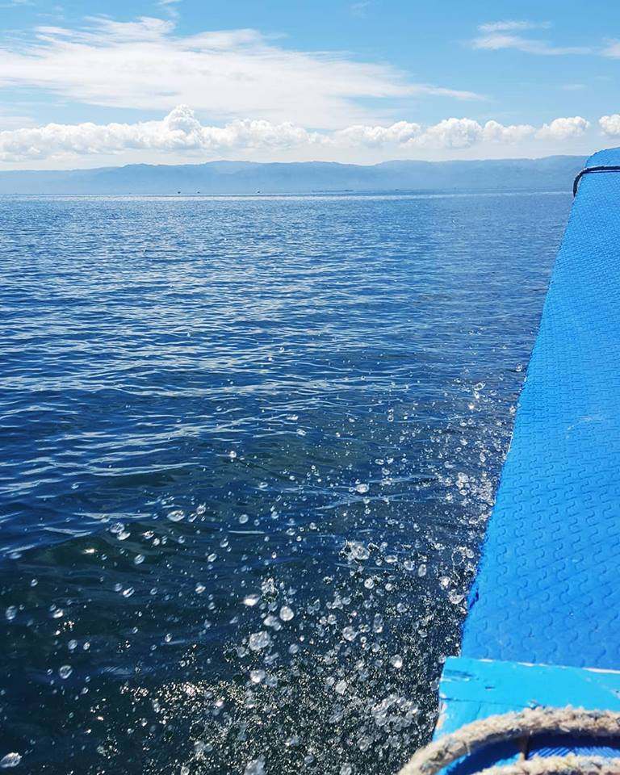
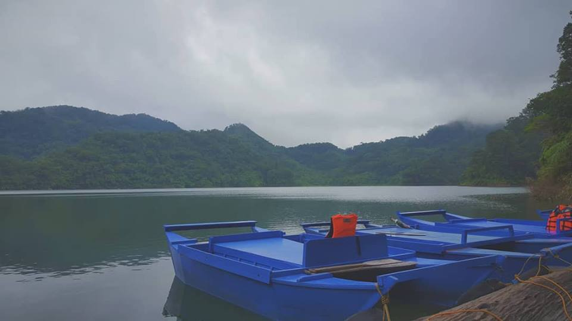

These shots I took was from my Samsung Galaxy S4 and S6. Because I believe that I'm still lacking in creative work to showcase, I saw fit to share the development of my photography skills. Most of the photos I take are to present to others, possibly, a different perspective to the things around us.
One of the first pictures I took with the Samsung S4 that I had just acquired. It was at a friend's house when I celebrated her birthday with friends and they set up decorations on their lamp. Though not a high quality picture, I still included this among my works because this was the first picture I took to start off my serious pursuit of photography.
Shot taken with my Samsung S6 and edited with the app VSCO. This was taken during a family trip to Dumaguete. We were headed to the Bais Sandbar here. We were riding a bangka on the way there and I saw a great opportunity to take a photo of the waves. Overall, the picture came out better than I expected.
Another picture I took during my family trip to Dumaguete. We didn't go there to tour around the lakes but only to take pictures. My aunt and my cousin took me and my brother to Lake Balisasayao to take pictures. It was at that time that I got this shot of the lake. In terms of editing and photography, this was one of the shots that I was most proud of.
I have some relatively minimal experience with sketching and drawing. After following numerous digital artists, I thought that I'd try my hand in this endeavour once again. So far I've worked on the following,
On a whim, I collected some suggestions from a friend which led me to draw this flower.
Following my initial work, I decided to include some color into my sketch.
I don't know what to call this kind of work but I got inspiration from a Youtuber who drew a circle and that became the boundary of her work. I based the concept off of what she made.*
*Here is the video I based the circle art on.
I have no idea where to start yet but I thought that I would try it out one of these days.
Fascination of digital art was what spurred me to start drawing and sketching in the first place.
I have everything set up for this but I haven't found the time to delve deep on this yet.